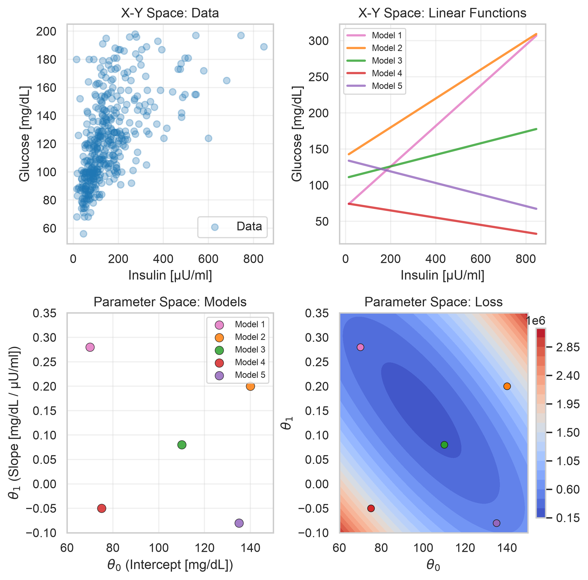

02 Linear Regression: Model Spaces
sklearn
regression
diabetes
feature-engineering
Spaces for Variables and Parameters
Data Load: Pima Indians Diabetes
# Fetch Pima Indians Diabetes Dataset
try:
from sklearn.datasets import fetch_openml
raw_data = fetch_openml("diabetes", version=1, as_frame=True)
df = raw_data.frame
except Exception as e:
for p in ["../../data/diabetes.csv", "../data/diabetes.csv", "data/diabetes.csv"]:
if os.path.exists(p):
df = pd.read_csv(p)
break
else:
print(f"Dataset could not be retrieved from OpenML or local storage: {e}")
sys.exit(0)
# Focus on physiologically valid observations for 2-hour serum insulin and glucose
# Zero values in these clinical measurements represent missing records
valid = (df['insu'] > 0) & (df['plas'] > 0)
df_clean = df.loc[valid].copy().rename(columns={
'insu': 'insulin',
'plas': 'glucose',
'mass': 'bmi',
'pres': 'blood_pressure',
'skin': 'skin_thickness',
'preg': 'pregnancies',
'pedi': 'pedigree',
'age': 'age'
})
X = df_cleanModel Spaces: Variables and Parameters
We distinguish between two complementary spaces:
- Variable Space \((x, y)\): Each observation (e.g. patient) is a point \((x_i, y_i)\), and a candidate model is represented as a line \(\hat{y} = \theta_0 + \theta_1 x\).
- Parameter Space \((\theta_0, \theta_1)\): The space of model configurations. Each point \(\boldsymbol{\theta} = (\theta_0, \theta_1)\) represents an entire candidate model. The loss function \(RSS(\boldsymbol{\theta})\) forms a convex quadratic bowl over this parameter plane.
Code
np.random.seed(42)
VAR1 = "insulin"
VAR2 = "glucose"
xr = X[VAR1].values
yd = X[VAR2].values
# Create figure with 4 subplots
fig, axes = plt.subplots(2, 2, figsize=(7.5, 7.5))
# Plot 1: Data (X-Y Space)
ax = axes[0, 0]
ax.scatter(xr, yd, alpha=0.3, color='#1f77b4', label='Data')
ax.set_title('X-Y Space: Data')
ax.set_xlabel('Insulin [µU/ml]')
ax.set_ylabel('Glucose [mg/dL]')
ax.legend()
ax.grid(True, alpha=0.3)
# 5 Candidate models distributed in parameter space
candidate_models = [
(70.0, 0.28), # Model 1
(140.0, 0.20), # Model 2
(110.0, 0.08), # Model 3 (close to optimum)
(75.0, -0.05), # Model 4
(135.0, -0.08) # Model 5
]
colors = ['#e377c2', '#ff7f0e', '#2ca02c', '#d62728', '#9467bd']
x_grid = np.linspace(xr.min(), xr.max(), 100)
# Plot 2: X-Y Space - Linear Functions
ax = axes[0, 1]
for i, ((b0, b1), col) in enumerate(zip(candidate_models, colors)):
ax.plot(x_grid, b0 + b1 * x_grid, color=col, alpha=0.8, linewidth=2, label=f'Model {i+1}')
ax.set_title('X-Y Space: Linear Functions')
ax.legend(loc='best', fontsize=8)
ax.set_xlabel('Insulin [µU/ml]')
ax.set_ylabel('Glucose [mg/dL]')
ax.grid(True, alpha=0.3)
# Plot 3: Parameter Space
ax = axes[1, 0]
for i, ((b0, b1), col) in enumerate(zip(candidate_models, colors)):
ax.scatter(b0, b1, color=col, s=60, alpha=0.85, edgecolors='k', linewidth=0.5, label=f'Model {i+1}')
ax.set_xlim(60, 150)
ax.set_ylim(-0.10, 0.35)
ax.set_title('Parameter Space: Models')
ax.set_xlabel(r'$\theta_0$ (Intercept [mg/dL])')
ax.set_ylabel(r'$\theta_1$ (Slope [mg/dL / µU/ml])')
ax.legend(loc='best', fontsize=8)
ax.grid(True, alpha=0.3)
# Plot 4: RSS Contour Plot
ax = axes[1, 1]
beta0_seq = np.linspace(60, 150, 100)
beta1_seq = np.linspace(-0.10, 0.35, 100)
B0, B1 = np.meshgrid(beta0_seq, beta1_seq)
RSS = np.zeros_like(B0)
for i in range(B0.shape[0]):
for j in range(B0.shape[1]):
RSS[i, j] = np.sum((yd - (B0[i, j] + B1[i, j] * xr))**2)
contour = ax.contourf(B0, B1, RSS, levels=25, cmap='coolwarm')
# Overlay candidate models onto RSS landscape
for (b0, b1), col in zip(candidate_models, colors):
ax.scatter(b0, b1, color=col, s=40, edgecolors='k', linewidth=0.5)
ax.set_title('Parameter Space: Loss')
ax.set_xlabel(r'$\theta_0$')
ax.set_ylabel(r'$\theta_1$')
fig.colorbar(contour, ax=ax, fraction=0.046, pad=0.04)
plt.tight_layout()
plt.show()
NoteNotice
- Regression Goal: \[RSS(\boldsymbol{\theta}) = \sum_{i=1}^{n} (y_i - \hat{y}_i(\boldsymbol{\theta}))^2 = \mathbf{e}^T \mathbf{e} \to \min\]
- Parameterized Models: Each parameter combination \(\boldsymbol{\theta} = (\theta_0, \theta_1)\) corresponds to a specific (linear) model in variable space.
- Loss Topography: Some models have a lower loss; For a given dataset (\(\mathbf{X}, \mathbf{y}\)), the OLS solution \(\hat{\boldsymbol{\theta}} = (\mathbf{X}^T\mathbf{X})^{-1}\mathbf{X}^T\mathbf{y}\) sits precisely at the unique global minimum.
- Samples May Need Selection: Sometimes samples have to be removed because of missing or wrongly annotated data.
- Variables May Need Transformations: In this first example, insulin and glucose are plotted in their raw, untransformed clinical units, but sometimes feature transformations (e.g. \(\tilde{x} = \log(x)\)) could improve model fit and stabilize variance. See the Feature Engineering reference guide.
- Parameter Interpretation: Parameters may carry units and meaning; intercept \(\theta_0\) is the baseline level at zero input, and the slope \(\theta_1\) is the expected response rate per unit increase in the predictor.
- Even the Best Models Will Be Wrong: No straight line can fully capture true biological complexity.
ImportantSummary
- For a given dataset we can find the optimal linear model: unique & deterministic
- Model still has uncertainties due to:
- sampling variability: parameter estimates
- irreducible noise: residuals
- systematic bias: model misspecification